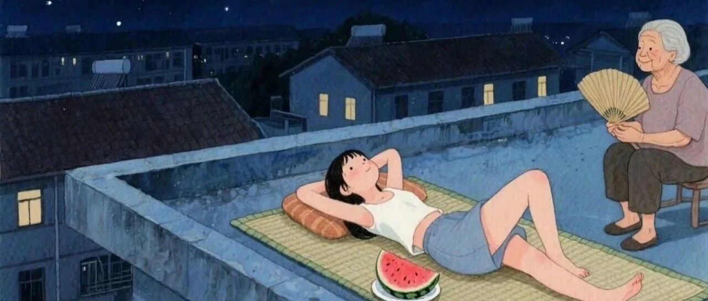

不上班五年(收获经验和节流心得)
点击关注 秋秋在分享
一起实现财务自由退休
大家好，我是秋秋呀。
24岁裸辞，26岁提前退休，五年不上班，我没有饿死，也不无聊，说白了：上班不是唯一的活路，但自由要动脑子。
------
一、方向感：上班最重要的事
以前我觉得大学毕业找工作就是为了养活自己，日复一日，没什么不妥。
现在我觉得:上班也要目标清晰。
要么赚钱赎身，要么找到意义和成就感，绝对不耗着。

1.上司不理想，我会撤
我遇到的领导都还挺好的，离开的关键点是:我不想成为他们。
第一份工作，上司工作五年月薪比我多5000(当时我差不多1万)。想到在这家公司三十岁加薪不容易，一眼就看到头了，果断拜拜。
第二份也是，自从知道带着整个部门的大领导月薪不足五万，我就心痛!
因为我的能力，连大领导下的小领导都做不了😭更悲催，只能寻求他法。
所以，工作找不到意义，领导还不能让你有信服感，没有榜样的力量，趁早打算。
2.一个人能胜任一个部门
除了想明白上班为了什么，还要想好你能做什么。
好多人会觉得我副业顺利，其实是上班时候一条龙服务。
我做编导，写作 拍摄 剪辑 运营 商务也都做。
当时觉得很高压，被迫成为“全能战士”却只领一份工资，现在想想，即使公司不那么要求，也应该去学习上下游的技能。

做到离开公司了也能活。(最好去一家公司，就能学会一条路子)
3.杠杆思维
有了能离开公司活下去的技能，可以利用杠杆放大优势。
像一份时间赚多份钱(写文章多平台发有多份流量费)，利用“地理套利”，做一人公司。
清晰的方向感是指路明灯。空间差、信息差、时间差，本身就有金钱价值。
------
二、看世界&读书:对抗无聊
不上班确实会孤独。
大多数人遇到大片闲暇时间，确实会觉得还不如上班呢。
我的感悟是:
1.读书就能对抗虚无

像旅行吃喝玩乐买买买，一旦平静，生活又会无聊。
读书不能让你有高强度的快乐，却能消解80%的精神内耗。
有阅读爱好的人，我想是不会孤独。
还可以培养些输出型爱好，摄影，写作，乐器，享受其中，是最好对抗无聊的方式。
2.看世界，向上向下都得有
什么叫见过世面？
很多人觉得是住过豪宅吃米其林三星，我觉得有田间耕作经验也是的。
见世面就是向上向下都得有。
向上看世界，你能享受去花钱的自由和魄力。

能在50元一晚的青旅结识新朋友，也能用2000元/月活出生命质感。

一个人要能有可上可下的生活方式，才能持续不上班不无聊。
------
三、极简主义：会节流是智慧
回看不上班五年，我本金没花多少。
一是有源源不断的收入，二是退休开销远比我想象中的低！
1.能错峰消费
像我去大连，北京过去的机票才190，去三亚住五星酒店的价格，等于旺季普通酒店。
我办了环球影城年卡，去一次才40，北京公园100的年票也很值。

2.房租地理差
避开北上深，不上班后，房租开销能少一大半的一大半！
我在北京房租8000，威海房租1400，省下的都够我当的生活费了，关键房子还更大。

不上班后，你也很少会有“补偿性消费”。
像上班时我会靠买买买缓解压力，不上班吃饭都变少了，一天吃两顿。穿衣最多的是家居服，没有那么多物欲了。
去年搬家几个箱子就搞定，也会有人问我旅居行李怎么办？其实根本就没太多东西，我去新疆旅行半个月也是一个双肩包。

小件必需品随时能买不用带，大件非必需品更不用带了。
人应该掌控物品，不是被物品绑架。
当行李比猫砂还轻，想往哪跑都顺风。
所以，解决好工作无聊和花钱的问题，不上班没啥不行的。
我的不上班公式 = 有方向感 + 读书看世界+ 极简主义
人生如旷野，我会选择开始的时候跑快一点，然后自己画地图。